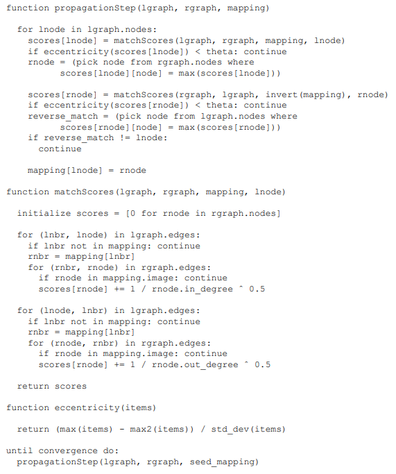

abstract
this paper propose a effective de-anonymization algorithm with 12% error rate.
contribution
- survey the current state of data sharing in social network. result in privacy risks include auxiliary information.
- define privacy in social networks and relate it to node anonymity. identify categories of attacks, give a methodology for measuring the extent of privacy breaches in social networks.
- develop generic re-identification algorithm for anonymize social netowrk.
- give concret demostration of algorithm by applying it fo Flickr and Twitter.
result: a third of the users who are verifiable members of both Flickr and Twitter can be recognized in the completely anonymous Twitter graph with only 12% errors.
State of the Union
这部分主要是分析目前市场上的数据类型。说明了算法所需要的数据很容易得到。对应contribution 1, 2.
The data is available from 5 types
- academic and government data-mining
- advertising
- third-party applications.
- aggregation: information from multiple social networks
- other data-release scenarios
related work
这个section主要分析隐私属性和之前的工作。对应contribution 1， 2.
privacy properties
sensitive info in graph: 1. existence of an edge between two nodes, 2. edge attributes(phone call frequency). 3. node attributes(node degree).
de-anonymization attacks
active attacks
assumptions: adversay is able to modify the network prior to its release.
by creating O(logN) new sybil nodes(whose outgoing edges help re-identify quadratically as many existing nodes)
ps: 具体的攻击方法被隐去了，但是分析了局限性。
- need to create fake nodes.
- no control over edges incoming->easy to identify that the graph is under sybil attacks.
- OSN(online social networks) always require a link to be mutual before information is available.
cur-based attacks create 7-node subgraphs containing hamiltonian path->easy to detect.
passive attacks
small coalition(group) of uses discover their location in the anonymized graph by utilizing the knowledge of newtork structure around them.
but this attack can only be applied to small scale graph.
defenses
Existing privacy protection mechanisms for social networks are only effective against very restricted adversaries and have been evaluated on small, simulated networks whose characteristics are different from real social networks.
- prevent network operators from capitalizing on user-provided data.
- anonymity. applications see randomized tokens representing users instead of actual identifiers.
model and definitions
graph G = (V, E).
attributes X for each node in V.
attributes Y for each edge in E.
discretized attributes.
anonymization:
- only publishing a subset of attributes.
- perturbation or sanitization that changes the graph structure.
link prediction: produces plausible fake edges.
threat model
attack scenarios
- government-level agency interested in global surveillance. (large S-aux, objective: large-scale collection of detailed info about many individuals)
- abusive markieting. (de-anonymize the graph using publicly available data)
- targeted deanonymization of specific individuals. (detailed contextual info about a single individual. objective is to use info to recognize the victim’s node)
aggregate auxiliary information
S-aux = G-aux(V-aux, E-aux).
AUX-X: attribute distribution of node. for example: [0.2, 0.8] -> 20% to be a friend with Lily.
AUX-Y: attribute distribution of edge
individual auxiliary information
this part is used for seed.
for a small number of members of target networks S. attackers can determine the exists in S-aux.
breach privacy
focusing solely on node re-identification.
groundtruth: mapping u-G between V-aux and V-san. if u-G(V) = NULL -> no mapping.
no need to maping every node in V-aux.
mapping is 1 to 1.
node re-identification succeeds on a node v-aux if u(v-aux) = u-G(v-aux)
de-anonymization
seed identification
assume the attacker’s individual auxiliary information consisits of a clique of k nodes.
clique(全连接子图)
input: 1. target graph, 2. k nodes in auxiliary graph, 3. k node degree values, 4. 2 out of k parirs of common neithbor counts, 5. error parameter
algorithm search the target graph for a unique k-clique with matching node degrees and common-neighbor counts.
propagation
input: G1 = (V1, E1), G2 = (V2, E2), seed mapping.
output mappint u.
algorithm: picks arbitrary unmapped node u in V1 and computes a score for each unmapped node v in V2 equal to the number of neighbors of u that have been mapped to neighbors of v.
Eccentricity: measure how much terms stands out from the rest. (max(x) - second_max(x)) / standard deviation(x)
Edge directionallity: compute two scores. 1. based only on the incoming edges, 2. based only on the outgoing edges.
node degerees: the score of each node is divided by the square root of its degree.
revisiting nodes: revisit already mapped nodes.
reverse match: from G1 to G2, from G2 to G1.

complexity analysis
assume a node is revisited only if the number of already mapped neighbors of the node has increased by at least 1.
complexity = O((|E1|+|E2)d1d2)